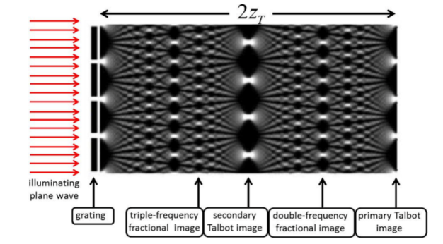
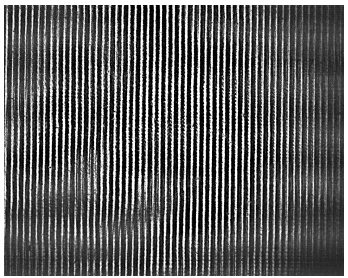
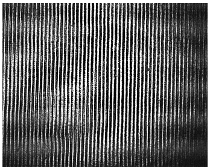
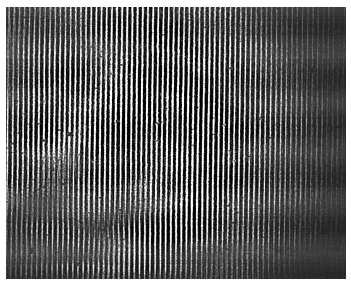
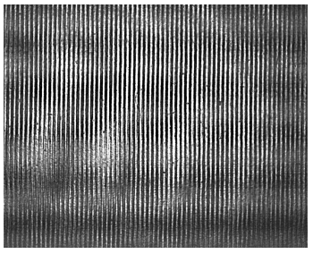

Aim
To study the phenomenon of self-imaging, also known as the Talbot effect, using a He-Ne laser and two different periodic grating structures.
Apparatus
The following equipment was used in the experiment:
- He-Ne laser source
- Microscope objective
- Collimating lens
- Two periodic gratings
- CCD camera
- Iris diaphragm
Theory
The Talbot effect, first observed by Henry Fox Talbot over 170 years ago, refers to the phenomenon of self-imaging of a periodic structure when illuminated with coherent light. When a monochromatic and coherent light beam, such as that from a laser, passes through or is reflected from a periodic structure, it diffracts into multiple orders. At specific distances from the grating, these diffracted waves interfere constructively to reproduce the original grating pattern. These distances are called Talbot distances. Mathematically, if a periodic object with spatial period \( d \) is illuminated by a plane wave of wavelength \( \lambda \), the light field at a distance \( z \) from the object under the paraxial approximation is given by:
\( E(X) \propto \sum_{n=-\infty}^{\infty} c_n e^{i 2 \pi n X / d} e^{-i \pi n^2 \lambda z / d^2} \)
where \( c_n \) is the amplitude of the \( n \)th Fourier component.
Self-imaging occurs at distances where all diffraction orders are in phase. These distances are given by:
\( z_m = m \frac{d^2}{\lambda}, \quad m \in \mathbb{Z}^{+} \)
At these Talbot planes, the original pattern is reproduced. For odd values of \( m \), the image is shifted laterally by half a period due to a \( \pi \) phase shift in the odd diffraction orders.
Procedure
- The optical setup was arranged as per the schematic for Talbot imaging.
- The iris diaphragm was adjusted to ensure uniform illumination of the gratings.
- Each grating was placed in the setup, one at a time.
- The CCD camera was positioned at various distances from the grating.
- The output pattern was observed and recorded to identify self-imaging distances.
- Distances between consecutive self-imaging planes were noted.
Observations
Self-imaging of the gratings was observed at specific distances. For the two gratings used, the Talbot distances were determined as follows:
| Grating | Talbot Distance (\( z_T \), cm) |
|---|---|
| Grating 1 | 1.5 |
| Grating 2 | 2.5 |
Given that the wavelength of the He-Ne laser is:
\( \lambda = 632.8 \, \text{nm} = 632.8 \times 10^{-9} \, \text{m} \)
The periods of the gratings were calculated using the formula:
\( d = \sqrt{\lambda z_T} \)
| Grating | Period (\( d \), m) | Frequency (\( f \), lines/mm) |
|---|---|---|
| Grating 1 | \( 9.75 \times 10^{-5} \) | 10.26 |
| Grating 2 | \( 1.26 \times 10^{-4} \) | 7.94 |
Figure 1: Illustration of Talbot Effect Setup

| Grating | Distance 1 | Distance 2 |
|---|---|---|
| Grating 1 |

a) At distance of 7 cm |

b) At distance of 9.5 cm |
| Grating 2 |

a) At distance of 7 cm |

b) At distance of 8.5 cm |
Conclusion
- The Talbot effect was successfully demonstrated using two different periodic gratings.
- The Talbot distances were observed to be 1.5 cm and 2.5 cm for the two gratings.
- The calculated grating frequencies were 10.26 lines/mm and 7.94 lines/mm respectively.